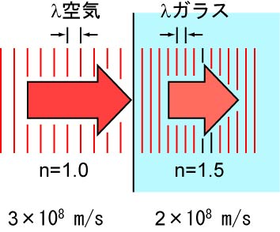
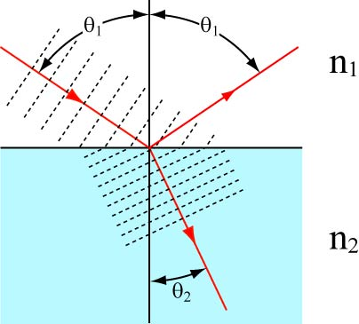
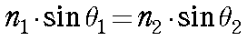
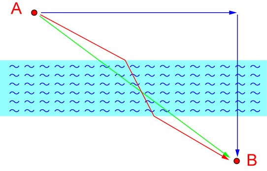
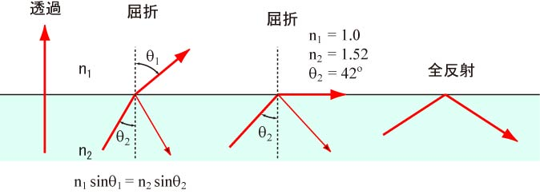

・屈折率
屈折率とは何でしょう？
それは，
媒質中の光速に対する真空中の光速の比
と考えてもらえばいいと思います（難しい話は置いておいて）．
つまり，光の速度は，ものの中を通過する場合に，遅くなるのです．

上の図で示したように，光がガラスに通過する際，その速度が低下します．
その度合いが，屈折率，なのです．
柄の場合には，約１．５，となります．
では，いくつかの物質の屈折率を見てみましょう．
| 空気 | 1.000 |
| 水 | 1.333 |
| エタノール | 1.36 |
| ガラス(BK7) | 1.51-1.53 |
| 合成石英 | 1.46-1.47 |
| Polystyrene | 1.59 |
この程度でいいでしょう．
この値はあくまで可視光での値です，波長，温度によって変化します．
石英ガラスは波長によってだいぶ変化するようですね（200ｎｍで1.54，1000ｎｍで1.45）．
・スネルの法則
これは皆さん，よくご存じでしょう．
二つの異なる屈折率を通過する光の進行方向が変化するもの．

その関係式は，

となります．
さて，どうしてこのようなことが起きるのでしょう？
きちんと，光学を駆使して，考えることはもちろんできます（たぶん）．
しかし，ここは生物物理，概念で理解すればいいのです．
そこで，以下のようなモデルを考えましょう．

ある人が，Ａ地点からＢ地点に向かう場合，どの経路を取れば一番早く着くか，と言う問題．
ここで，川を通過する際には，歩む速度が遅くなる，ということにしましょう．
最短距離はもちろん，図の緑の経路．
しかし，これでは川を横切る距離が長くなってしまいます．
では，できるだけ川を横切らない経路は．．．．青い経路．
しかし，これではかなりの距離となります．
結論は，赤い経路，移動距離も比較的少なめで，川を横切る距離も比較的少なめな経路が一番早く着くのです．
光の屈折もこのように考えてもらえればいいと思います，光が最短時間でつきたいと思うかはわかりませんが．．．
ここでおもしろいのは，屈折率の高い媒体から低い媒体へ光が進む場合，

ある角度で光が通過できなくなります．
ガラス(n=1.52)と空気(1.000)の場合，42度
水(n=1.33)と空気(1.000)の場合，49度
となるのです．
まるでガラスのように．．．．このことを，全反射，と言います．
実感するに一番いい例が，
お風呂の中での時計の文字盤
です．
ちょうど上の図をしたから覗いた場合を考えてください．
水色の部分がお湯，白い部分が時計の中の空気，と思ってください．
時計を斜めにしていくと，急に時計の表面が銀色になることがわかります．
もちろん．．．．防水の時計で実行してくださいね．
この屈折の原理を応用したのが，レンズ，なのです．